Chapter 14 Fixture Builder
👉 Use the Fixture Builder software for the Vibe’s fixture devices importing, building and editing.
This chapter describes the Fixture Builder integrated software that is used for managing the device database and for the creation and editing of the existent fixture devices.
Chapter index:
- 14.1 Introduction
- 14.2 Device Import
- 14.3 GDTF Import
- 14.4 Build Device
- 14.5 Edit Device
- 14.6 Fixture Support
14.1 Introduction
The Fixture Builder is a Vibe inbuilt software used to manage the Device Database.
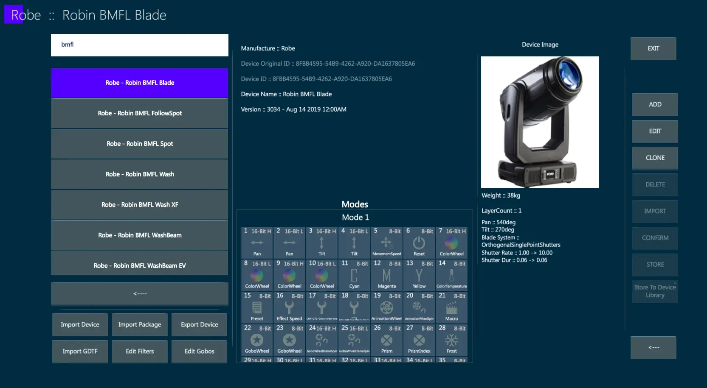
Fixture Devices may be created, imported and exported through the Fixture Builder.
Fixture Builder can be launched either from the Vibe Menu or from the OS programs.
If launching the Fixture Builder from the Vibe, a popup will ask if it has to be opened in Console or in Show mode.
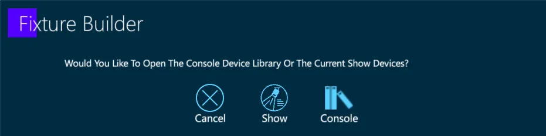
Console Mode - All the devices contained into the console’s device database will be listed.
Show Mode - Only the devices imported into the current Vibe show will be listed.
14.2 Device Import
Vibe Devices may be added to the Console Device Database by adding a single device from a .dev file or a device package containing multiple devices from a .devp file.
Vibe devices may be exported from the Console Device Database as .dev files.
14.2.1 Import Vibe Device
Tap {Import Device} to open the device import popup.
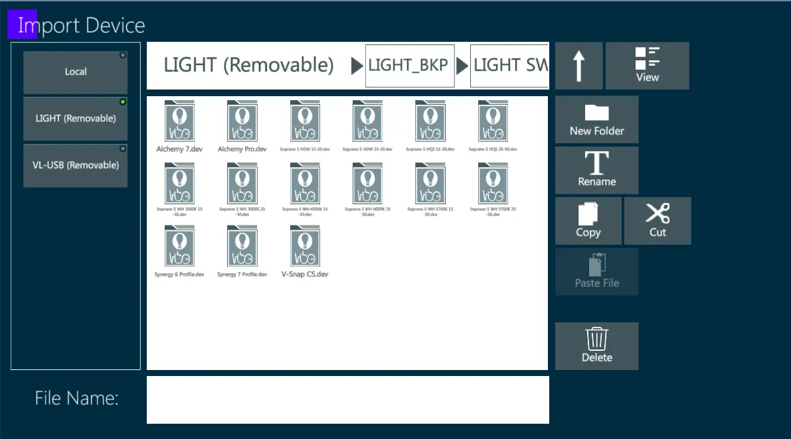
Select the Device to import from the USB stick and press Apply.
When the import is completed, the “Device Imported Successfully” popup will be displayed.
14.3 GDTF Import
Vibe Devices may be added to the Console Device Database by importing and converting in .dev format a .gdtf file.
Import a GDTF Device and convert it into a Vibe Device
Tap {Import GDTF} to open the GDTF file import popup.
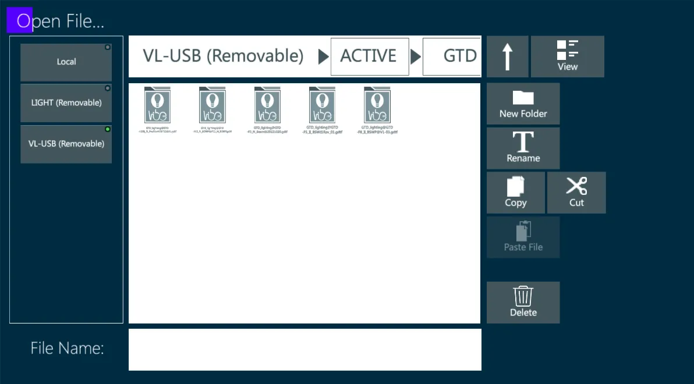
Select the Device to import from the USB stick and press Apply.
When the import is completed, the “Device Imported Successfully” popup will be displayed.
👉 GDTF file format is open source, therefore anyone can create files of this type. Because the GDTF files may have errors affecting the conversion process, a popup will suggest to check the generated devices, parameters and steps to ensure the have been correctly matched or to fix any eventual error.
14.4 Build Device
Vibe Devices can be created with the Fixture Builder.
The Device building process may start from scratch, by creating a completely new device and adding all the related information, or it is possible (and usually much faster) to start from an already existing device or an imported device, so that it would be only necessary to edit the needed data and information.
14.4.1 Terminology
Fixture: The actual physical lighting fixture. Could also mean an instance of a Device in the Vibe console.
Device: A device is a definition of a lighting fixture. Maps all of the fixture’s attributes:
DMX Layout: The function of each channel as explained in the fixture’s DMX chart.
Physical Data: Weight, Wattage, Range of movement (Pan/Tilt span), Blading System, and any other information referred to a physical property of the fixture.
Filters (Gels): the color filters used in the fixture’s color wheel(s).
Gobos: the gobo frames used in the fixture’s gobo wheel(s).
Mode: Each mode, also called personality, is a DMX preset of the device that may be assigned to define the fixture’s control behavior. Each mode has a different set of the parameters, allowing different ways of controlling the same fixture.
Parameter: Parameter could be either 8-Bit/16-Bit. There is a set of parameters types (e.g. dimmer, pan, animation wheel).
Channel: In this manual a channel refers to one single DMX Address. For example, a 8-Bit parameter is using only 1 channel while a 16-bit parameter is using 2 channels.
Offset This term means the position of a channel in the device channel layout.
Step: A step represents a range within the parameter value that has a certain function, for example: ‘Gobo Slot #3’, ‘Strobe Rand’. It could be also assigned with information about Color and Gobo.
Step Table: Each parameter can have more than one step table. Each step table represents different functions of the parameter. The current Step Table may depend on another parameter’s value. For example gobo rotation parameter can control either the rotation speed of the gobo rotation or the index angle of a certain gobo, the different functioning depends on the value of the gobo wheel parameter.
Condition: Set of rules that determines which StepTable should be used.
Layer Part of the fixture that may be controlled individually. For example regarding LED fixtures that have pixel control, meaning the option to control each pixel individually, one of these pixels is called a Layer.
👉 Layer applies mostly to Color and Dimmer parameters, but in some fixtures it may also regard other parameters such as Pan, Tilt, Zoom, or other ones.
14.4.2 Resources and Information
In order to create a device in the fixture builder, prepare the following in advance:
Manufacturer’s name
Device’s name
Picture of the device
Pictures of the gobos
Colors of the color wheel
DMX chart (for each mode)
👉 Before starting a new device building, check if there is a device that matches the fixture first through the advanced search tool, or find the next best match to edit it, or eventually a GDTF file to import and edit.
Device Validation
Each attempt to store a device or to go back to the last view will check for device for errors.
If any error is found out, it will be shown a detailed message describing the errors.
Errors have to be fixed before any progress.
Command Keys
All the control and navigation buttons are in the right hand side of the screen.
Command keys are used to navigate between the different screens of the application, edit or add new objects.
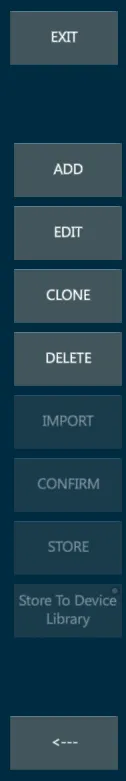
These button are context sensitive, the function is changing depending on the current view and the selected object. Inactive keys are grayed out.
EXIT - Exit the Fixture Builder
ADD - Add a new object
EDIT - Edit the selected object
CLONE - Duplicate the selected object
DELETE - Delete the selected object
IMPORT - Import the object from another device i the database
CONFIRM - Apply the changes made to the current object
STORE - Save all the changes that have been done
Store To Device Library - If working on the Show Device Database, save the changes made to the device on the Console Device Database too.
<— (BACK) - Go back to the previous view.
👉 When tapping {BACK} the changes will be temporarily saved. If the changes need to be permanently saved, click on the {STORE}, otherwise when selecting a different device the changes will be discarded.
14.4.3 Create Device
In the Fixture Builder Home Screen, tap {ADD} to open the device creation popups.
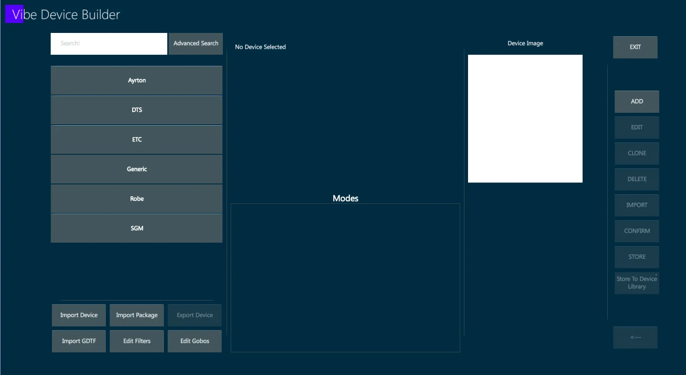
Select the Manufacturer.
There are also the manufacturers “Unknown” and “Generic” if needed.
If a manufacturer is already selected before pressing {ADD}, this popup will be skipped.
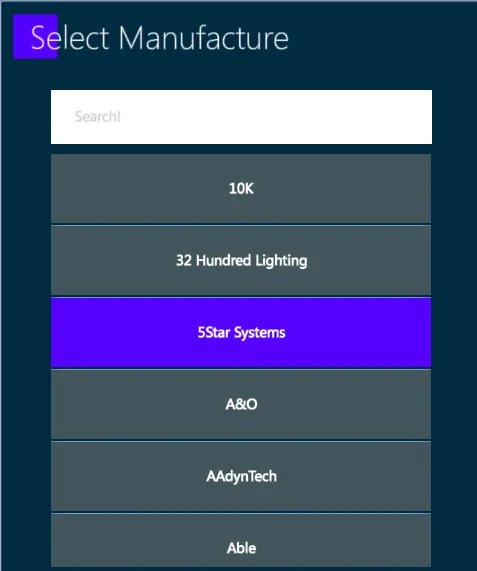
Enter the Device Name.
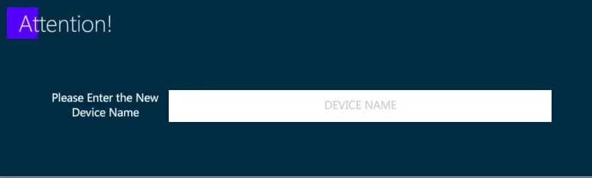
The Device will be created as empty.
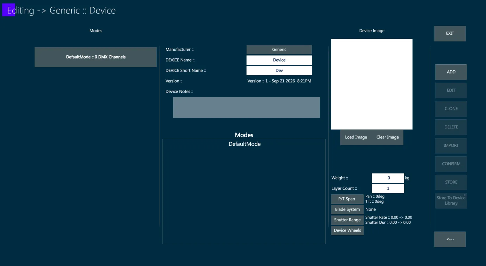
Load the Device Image:
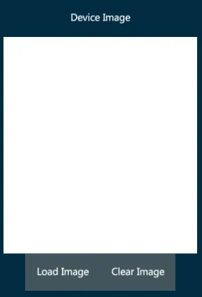
Insert the Fixture Data, which are common to all the Device Modes.
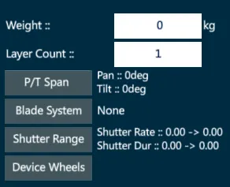
Weight: The weight of the device in kg.
Layer Count: The maximum amount of layers on the device.
Pan/Tilt Span:
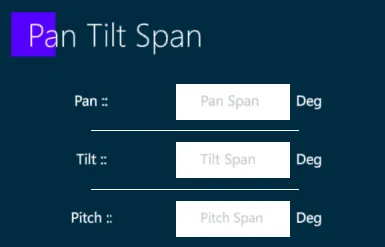
- Blade System:
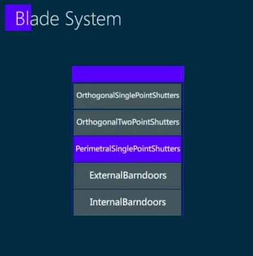
None – no blade commands, the blade picker will not be available and there will be no blade commands.
Orthogonal Single Point Shutters – Each blade is controlled by a Depth parameter and an Angle parameter.
Orthogonal Two Point Shutters – Each blade is controlled by a DepthA parameter and a DepthB parameter, one for the left of the blade and one for the right of the blade. When both Depths are the same, the blade is straight. When they are different, there is an angle.
Perimetral Single Point Shutters – Works the same as Orthogonal Single Point Shutters. The blades are around a perimeter and not necessarily 90 degrees from each other. For the Vibe they work the same, so it is suggested to use Orthogonal unless otherwise stated.
External/Internal Barndoors – Each blade has only 1 Depth parameter, they cannot be with an angle.
Shutter Range
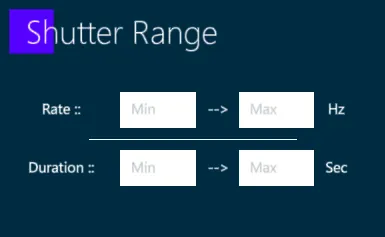
- Device Wheels
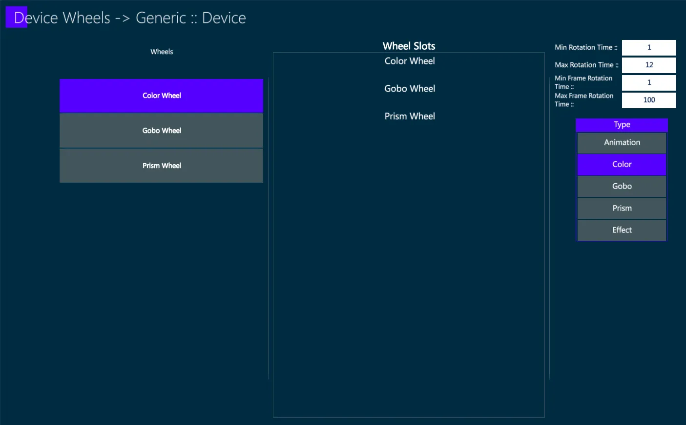
{ADD} a wheel and write the wheel’s name
Set the wheel type (Animation, Color, Gobo, Prism, Effect)
Insert the wheel and frames rotation speed
Select the wheel and Tap {EDIT} to insert the frames
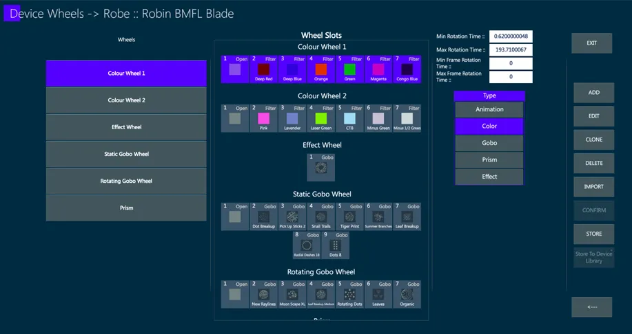
After properly setting all the fixture information, follow the fixture’s DMX chart to create the DMX Modes.
Select the Device Mode and tap {EDIT}.
Create the first DMX Mode – It is recommended to start with the most complicated DMX mode.
Add all the parameters by types.
After adding all the parameters, Edit each parameter.
First add all the parameter types, only then set the 16-Bit LSB offset. It is recommended to set it in ascending order (first start with the lowest parameter # and go up).
After finishing the first mode, clone it and make the necessary changes to fit the simpler modes (often it will be mostly changing 16-Bit parameters to 8-Bit).
For a deeper explanation of the Mode and Parameters building, please refer to the next chapter Edit Device as the operations are exactly the same as the ones for editing an already existing device.
14.4.4 Device Wheels
The Device Wheel page is relevant for adding wheel commands on the wheel picker.
Each wheel has Min/Max Rotation Time and Frame Rotation Time.
These must be filled with different values for wheels who plan to use Spinning commands.
If no Spin commands are needed, this can be left as 0.
In the example image, the color wheel has wheel spinning commands, but no frame spinning commands.
Type – Wheel Type: the commands used and the device slots picked should consider the type selected.
Press {EDIT} to enter the editing of the selected wheel.
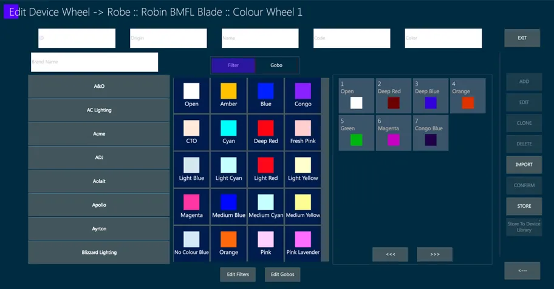
Wheels are listed and selected on the left side.
The Wheel Slots box lists the wheels’ frames with their icons and numbers in the order corresponding to the fixture’s wheels.
To configure a Color Wheel, use “Filter” to pick color slots.
To configure a Gobo Wheel, use “Gobo” to pick gobo slots.
To configure an Effect, Prism and Animation wheel also use “Gobo” to pick slots.
On the left there is the option to filter by brand of the slot. Either slots from the same brand of the device or from any other brand may be picked.
On the top there is the option to filter by specific attribute of the slot.
Most wheels have “Open” as their first slot, so remember to always pick Open first, it will always be in the slot list for both Filter and Gobo.
Animation wheel do NOT use Open, they use just the animation gobo.
Some DMX Charts have a continuous command between Open and the first gobo, and later a continuous command between the last gobo and Open. To accommodate that, create another Open as the new last slot and use the new Open as the slot for the command between the last slot and Open.
If the Filter/Gobo does not exist, it may be added new with the “Edit Filters” and “Edit Gobos” buttons.
14.4.5 Edit Filters
Edit and create new Filters for the Vibe.
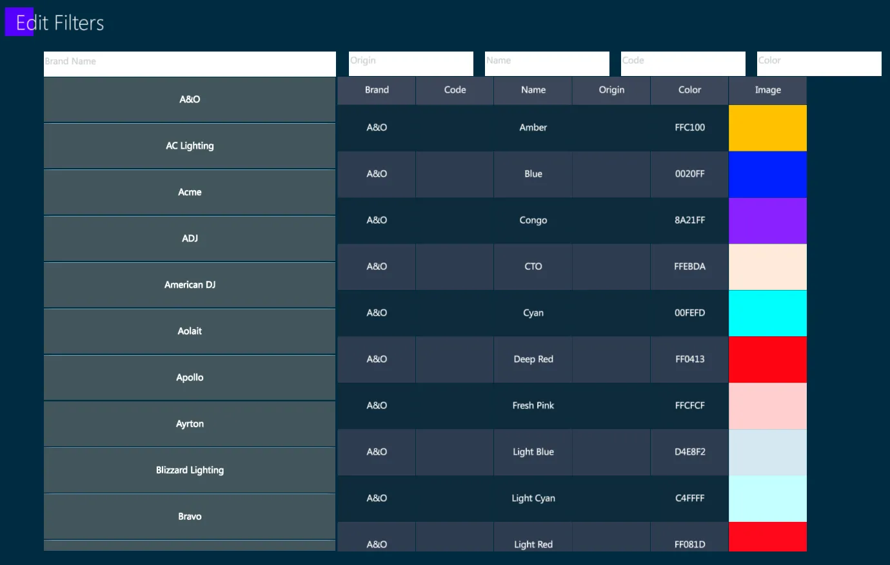
Once created, the filter will be available in the computer/console for future devices as well.
Filters screen has search parameters similar to the Device Wheels page for an easy search of the desired Filter.
Press {ADD} to add a new filter.
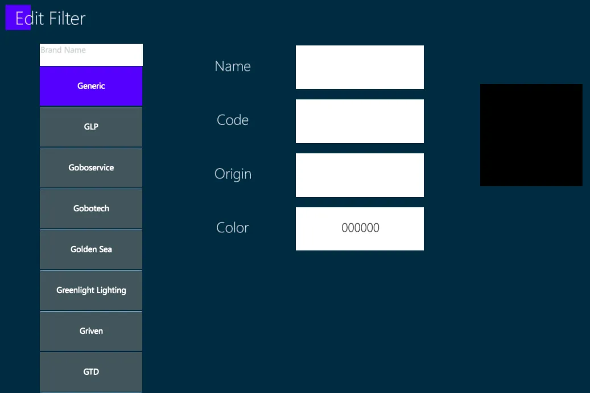
A new added filter must have a brand and a color, the rest is optional.
Color – The color will be written as a Hex color, and the color will be shown on the write of the edit boxes for an easy preview of the color.
Name – The name of the filter, will be shown in the Smart Screen next to the wheel slot.
Code – A code to be able to search for the filter.
Origin – The device from which the filter is taken from.
Press {CONFIRM} to apply and store the new filter.
14.4.6 Edit Gobos
Edit and create new Gobos for the Vibe.
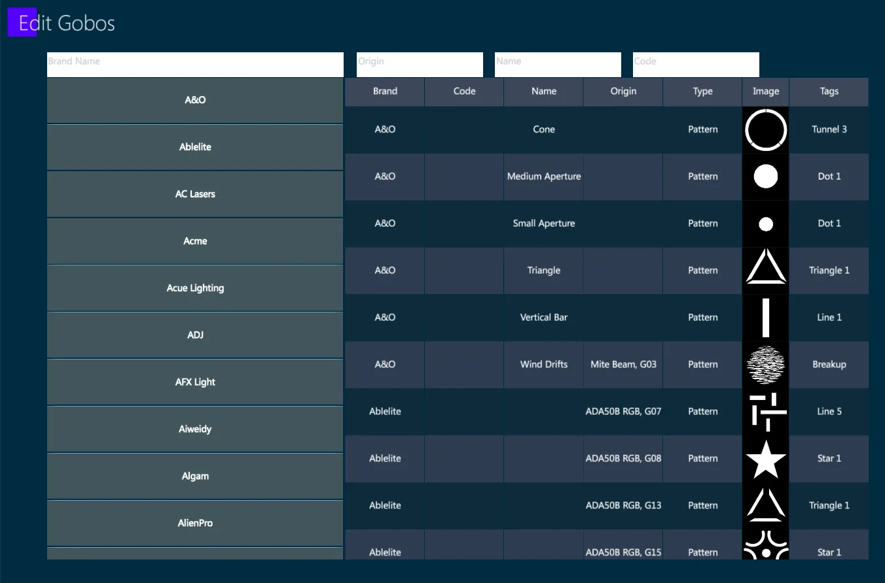
Once created, the gobo will be available in the computer/console for future devices as well.
Gobo screen has search parameters similar to the Device Wheels page for an easy search of the desired Gobo.
Press {ADD} to add a new gobo.
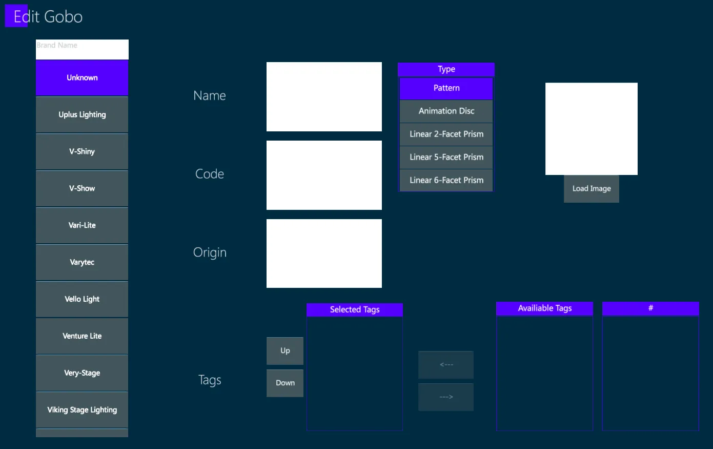
A new added gobo must have a brand and a Type. It is highly recommended to also have an image and tags.
Load Image – An image of the gobo, that cannot be bigger than 128x128.
Type – The gobo type: Pattern for normal gobos, Animation Disc for animation wheels, Prism for prisms.
Tags – Description of what the gobo represents. This is used in the Vibe when switching device and searching a gobo that looks similar. Each tag has a name and an amount. The location of the tag in Selected Tags list defines its priority.
Name – The name of the gobo, will be shown in the Smart Screen next to the gobo slot.
Code – A code to be able to search for the gobo.
Origin – The device from which the gobo is taken from.
Press {CONFIRM} to apply and store the new gobo.
14.5 Edit Device
Vibe Devices can be edited with the Fixture Builder.
In the Fixture Builder Home Screen, tap {EDIT} to enter the device editing mode.
User Devices and System Devices
The Vibe comes with a huge inbuilt database of system devices and it is not permitted to delete or change the system devices.
When editing a system device it will not change the original system device but it will create a clone of the edited device.
Because the fixture database is frequently updated, there will be an option to update not only the system devices but also the cloned system devices (for example if there is any updated gobo image it will also update a custom device which was cloned from a system device).
14.5.1 Device Data
In the device’s home screen the data and information of the device may be changed.
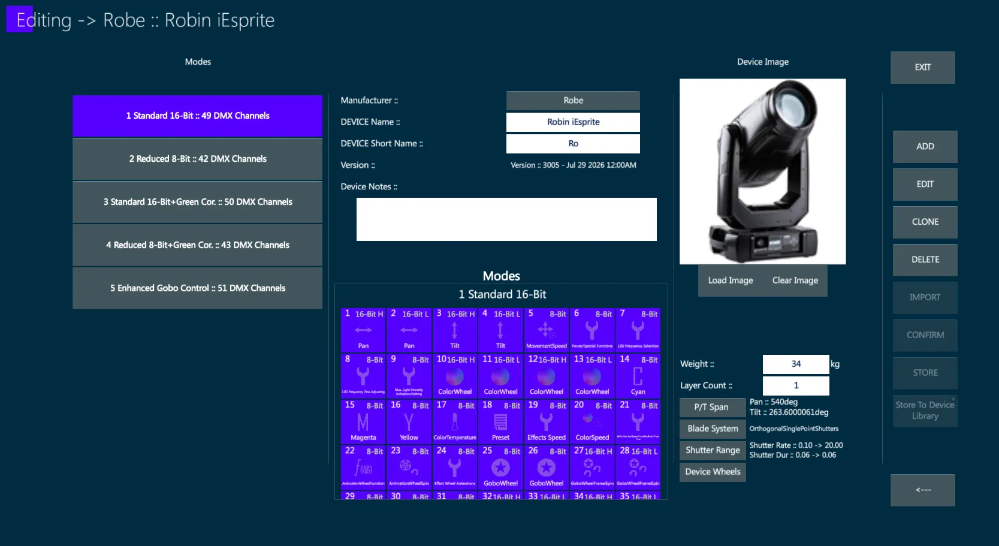
Manufacturer - Tap on the {Manufacturer Name} to switch manufacturer.
DEVICE Name - Text box with the name of the device.
DEVICE Short Name - Text box with the short name that will be used as the default name for fixtures created with this device.
Device Notes - Text box to write user notes related to the device.
Modes - Icon box showing the devices’ parameters. Scroll it up/down to visualize the parameters of all the existing modes.
Load Image - Open a file explorer popup to choose an image for the device. The image can’t be bigger than 196x196.
Clear Image - Delete the image loaded from the Load Image button.
Weight - The weight of the device in kg. This information is currently just for general knowledge and has no effect on the device.
Layer Count - Maximum amount of layers on the device.
P/T Span - Maximum degrees the device can pan, tilt or pitch. This must be filled properly in order to use features involving Pan/Tilt/Pitch parameters.
Blade System – If the device has framing blades, choose the correct system, corresponding exactly to the kind of framing blades the fixture has. This must be filled properly in order to use features involving Blade parameters.
Shutter Range - Set the range of the shutter rate and the shutter duration. This must be filled properly in order to use features involving shutter commands or shutter duration commands.
Device Wheels – Open the Device Wheels section in order to add or edit all the device wheels.
14.5.2 DMX Mode
Select the mode to be edited from the list of modes on the left side.
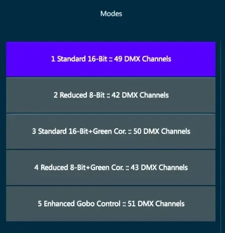
{ADD} to create a new empty mode for the selected device.
{EDIT} to enter the parameter table with the DMX Chart of the selected mode.
{CLONE} to create a new mode as a duplicate of an existing mode.
{DELETE} to remove the selected mode.
DMX Chart
Select a Mode and tap {EDIT} to enter the DMX Chart screen.
The device’s DMX Chart shows the mode name and the relative parameter table.
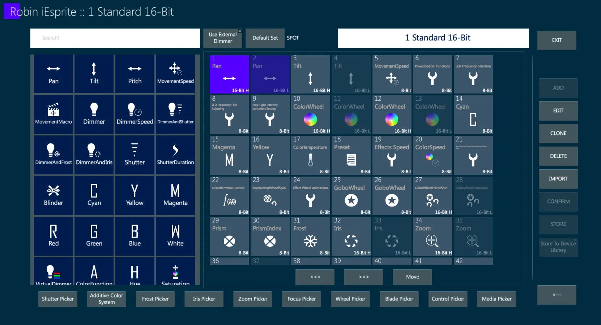
Select the parameters from the parameter list on the left side and tap
{ADD} to add the parameter to the parameter table.
If the parameter name in the DMX Chart does not fit exactly to the parameters in the Vibe’s parameter list, use the parameter that functionally fits better, then the name may be changed.
If no parameter on the list fits good enough, use the parameter “User Defined”. If using “User Defined”, it is highly recommended to change the parameter name, to tell what it actually does.
{EDIT} to enter the parameter definitions of the selected parameter.
{CLONE} to add a new parameter as a duplicate of an existing parameter.
{DELETE} to remove the selected parameter from the table.
{IMPORT} key may be used to import the parameter list of a different device. This will delete the parameters already created for this device.
Select the parameters in the parameter table and use the {Move} and {<<<} / {>>>} buttons to reorder the parameters in the order they appear in the DMX Chart.
14.5.3 Parameter Definitions
Select a Parameter and tap {EDIT} to enter the Parameter Definitions screen.
The Parameter Definitions has 2 or 3 tabs, depending on the parameter type:
Parameter Properties - to define name, bank, values and behavior of the parameter.
Parameter Steps - to define the steps corresponding to the different functionality of the parameter.
Color Information - to define the way a color parameter affects the color output of the fixture (this tab is only available for Color Mix parameters).
14.5.3.1 Parameter Properties
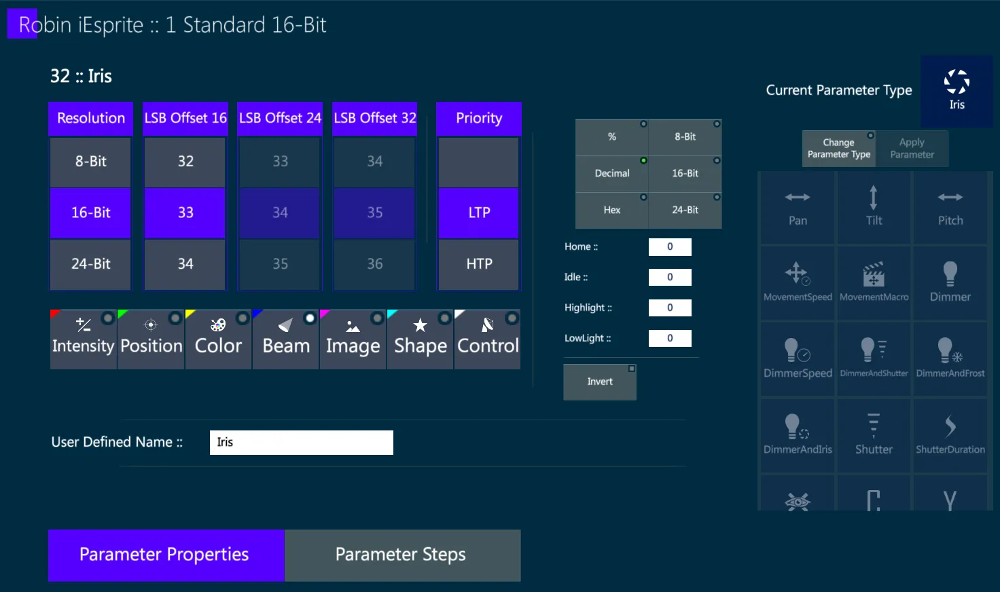
Resolution – the resolution of the DMX range.
If the range is higher than 256 the resolution has to be increased to match the DMX range.
LSB Offset 16/24/32 – the location of the extended parts of the parameter in case the resolution is higher than 8-bit.
Unless specified otherwise, the low resolution offsets should remain directly after the base of the parameter, which is set as default.
User Defined Name – in case is needed to change the parameter name, a new name may be written in the field.
If the field is left empty, the default parameter name will be applied.
Home/Idle/Highlight/Lowlight – the DMX value of the parameter in these states.
Dimmer parameter will have its own values so they should not be touched in dimmer.
If the DMX Chart only gives a default/home value, all the 4 slots should be filled with that value.
Bank – the bank of the parameter may be changed by selecting a different bank.
It is filled automatically when the parameter type is chosen, so most of the times there is no need to change it.
Change Parameter Type – it is possible to change the parameter type after it was created.
This operation will reset several changes that may have been done made to fit the new parameter type with its defaults.
14.5.3.2 Parameter Steps
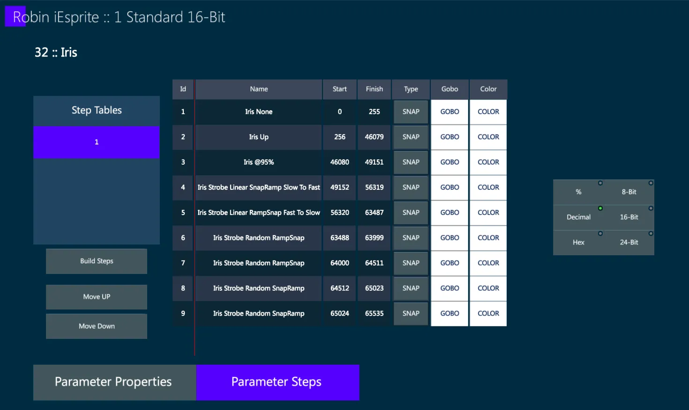
The parameter must have at least 1 step.
The parameter will be created with a default step, so if in the DMX Chart there are no steps or only one step, the default step may be left as it is.
If in the DMX Chart the parameter has several steps, these can be added and named.
Start / Finish – The DMX range of the step. There must be no overlap in this range with another step’s DMX Range.
👉 Use Import to copy the parameter steps of another parameter in the system, this will delete existing steps.
- Build Steps – open the Build Steps popup for an easy creation of multiple steps with the same structure.
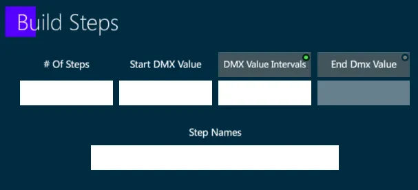
# Of Steps – The number of steps to be created.
Start DMX Value – The start value of the DMX range of the first step.
DMX Value Intervals – The size of each step’s DMX range, or the difference between the start ranges between 2 consecutive steps.
End DMX Value – The end value of the DMX range of the final step, in this case the size of each step will be calculated automatically.
Step Names – The name of the steps, each step will have an ascending number at the end of the name.
Step Table
If the parameter has different steps according to the value of a different parameter, a Step Table for each group of steps needs to be created.
Select the Step Table on the left and, depending on the action needed, press {ADD}, {EDIT}, {CLONE} on the right.
Press {EDIT} to open the Step Table Edit popup:
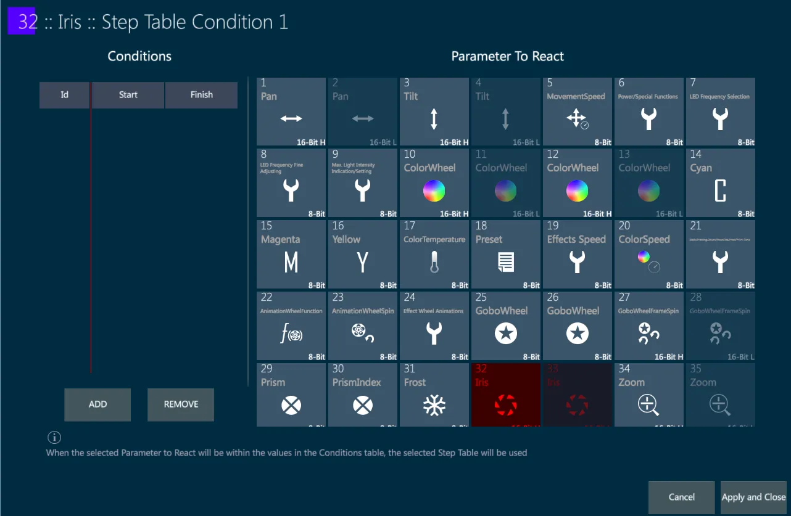
In the popup the current parameter is marked in red, as it cannot be an outside parameter of itself.
Choose the parameter that affects the red parameter and assign a DMX range.
Now the current parameter steps will only be active when the other parameter is in that range.
👉 When using step tables, usually set to each table the same controlling parameter and give it a different range, filling up that parameter’s whole DMX range.
14.5.3.3 Color Information
When editing an RGB, RGBW, or Auxiliary Color parameter, it will have a color information tab where all the color data used for a precise color mix may be defined.
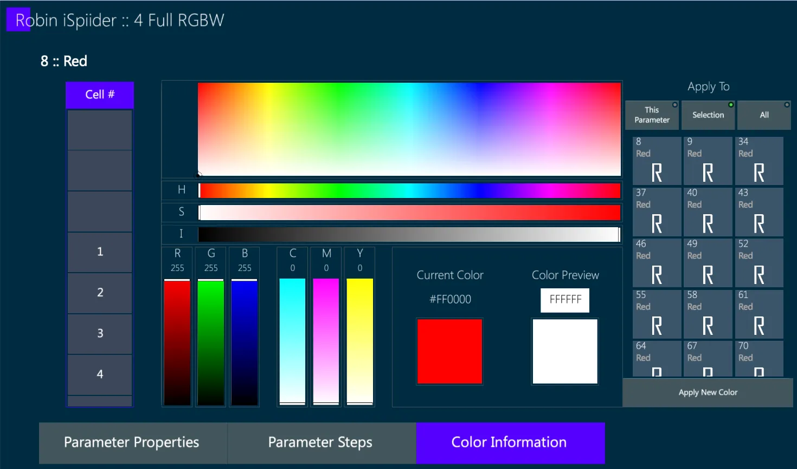
Cell # - The layer this parameter belongs to.
Several parameters in the same layers will be used to create a single color when using HSI or the Smart Screen to pick a color. Each layer should have Red, Green and Blue parameters, and each layer can’t have the same parameter type twice. When changing the layer index of the parameter, the Fixture Builder will automatically fix other parameters if the parameter type already exists in this layer.
👉 The layer index will be filled automatically in the order of parameter creation, so there is no need to touch this if the parameters were created in the correct order.
Color – In the middle of the screen there are several tools to change the color of the parameter.
“Current Color” shows the current color of the parameter.
“Color Preview” shows the color clicked using the color tools.
Pressing “Apply New Color” will replace the Current Color with the Preview Color.
Apply To - above the Apply New Color button there are the options to change the colors of multiple parameters of the same type at once.
Red/Green/Blue/White parameters will have the default color applied to them on creation, so there is usually no need to change them.
Auxiliary Colors will not have a color on creation, so it is recommended to give them the correct color, and also give them a fitting parameter name to represent that color.
👉 Because RGB is intended for Additive Color Mixing and CMY for Subtractive Color Mixing, a device mode should not have both RGB and CMY parameters at the same time. If the color mixing system of the fixture features colors from both RGB and CMY, use the RGB parameters and then add Auxiliary Color parameters for CMY.
14.5.4 Pickers
The pickers are made for an easy fixture control of the parameters, they define the special functionality that can be used from the Vibe Smart Screen.
Take care on pickers editing as it will directly affect the Smart Screen features.
Vibe Smart Screen allows controlling any fixture of any brand exactly in the same way, based on the available functionality of the parameters, through the use of the Smart Pickers, therefore they must be configured accurately and precisely.
14.5.4.1 Shutter Picker
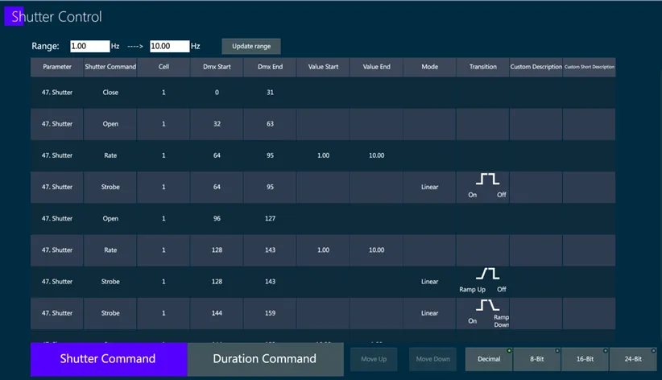
The Shutter Picker control table shows rows with all the commands that will be affected by the Smart Screen Shutter Picker, their DMX values and their properties.
Range – This is the same Shutter Range defined in the device home page, which can be changed here as well.
The shutter range is usually written in the parameter steps of the fixture’s user manual, or in the details section of the device.
If the range information is not available, use 1-10.
After writing a range, press {Update Range} to apply the changes.
{ADD} may be used to create a new command.
{EDIT} may be used to change the command.
{CLONE} may be used to duplicate the command.
{DELETE} may be used to remove the command.
{IMPORT} may be used to take the commands from a different device.
Press {EDIT} to open the Edit Shutter Command popup.
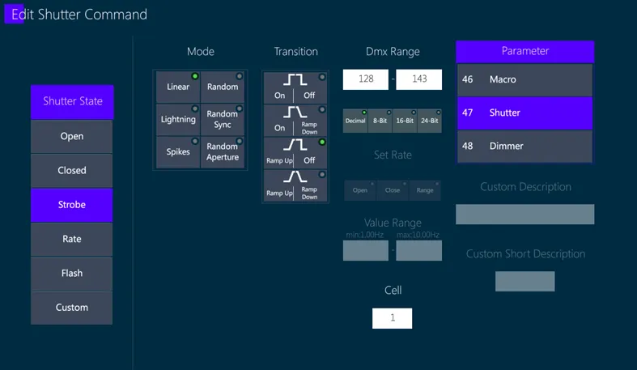
Shutter State – the shutter command function:
- Open – the shutter is open, light goes out normally.
A parameter using shutter commands should have its home DMX set as an Open shutter command.
Close – the shutter is closed, no light goes out.
Strobe – the shutter is opening and closing over time, this will require to fill Mode and Transition.
A Strobe command must exist within the DMX range of a Rate command, if one does not exist a default Rate command will be created automatically when a Strobe command is created.
- Rate – the speed of strobe commands in its range.
The speed is limited by the Shutter Range defined for the device.
Flash – similar to Strobe and Rate combined.
Custom – free text to define what the command does in case it is a special command that cannot be defined using the other Shutter States.
Mode – must be filled when the state is Strobe or Flash, this how the rate is used when the command is active.
For example: Linear is normal static speed (default), Random will have a different random speed each time the shutter opens and closes, etc. This is stated in the DMX Chart in the command, if not stated use Linear.
Transition – if the shutter opens/closes over time, or jumps straight from open to close and viceversa.
This is stated in the DMX Chart in the command, if not stated use On-Off.
DMX Range – the DMX range of the command. Two shutter commands of the same parameter must not have overlapping DMX Ranges, unless they are Strobe and Rate.
Rate and Flash - the speed of the strobe.
Cell – a number to define the layer on which the shutter is working on.
Parameter – the parameter that uses the command, usually Shutter but it can be any parameter.
Custom Description + Custom Short Description – for custom commands, free text to explain the command behavior.
Press Confirm to save the command.
Pressing Back (<–) will discard the changes made to this command.
If a different parameter is controlling the shutter duration, the duration commands should be set in the Duration Command tab.
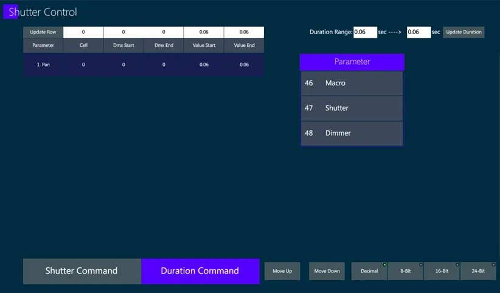
When a command is selected, it will be copied to the top edit row, allowing to edit it.
Press {Update Duration} to apply the changes.
14.5.4.2 Additive Color
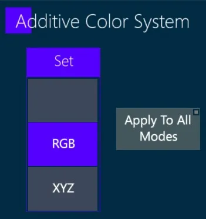
This option is available only on fixtures with an RGB based color mixing system.
It will affect how RGB parameter values are translated to vHSI and viceversa.
RGB mode - use the typical RGB-HSI conversion.
XYZ mode - move through the XYZ Color Space, making better color coverage if the RGB parameters do not include the standard RGB colors.
14.5.4.3 Frost Picker
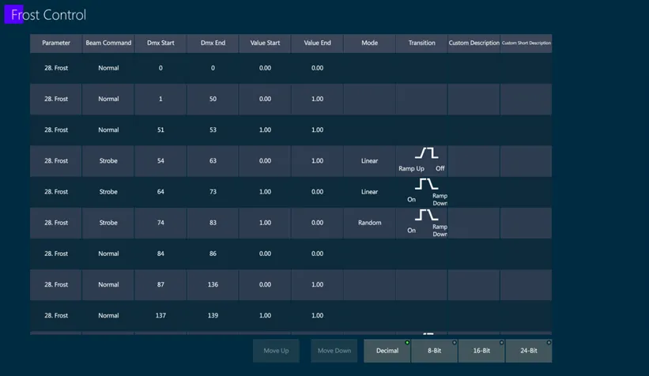
The Frost Picker control table shows rows with all the commands that will be affected by the Smart Screen Frost Picker, their DMX values and their properties.
{ADD} may be used to create a new command.
{EDIT} may be used to change the command.
{CLONE} may be used to duplicate the command.
{DELETE} may be used to remove the command.
{IMPORT} may be used to take the commands from a different device.
Press {EDIT} to open the Edit Frost Command popup.
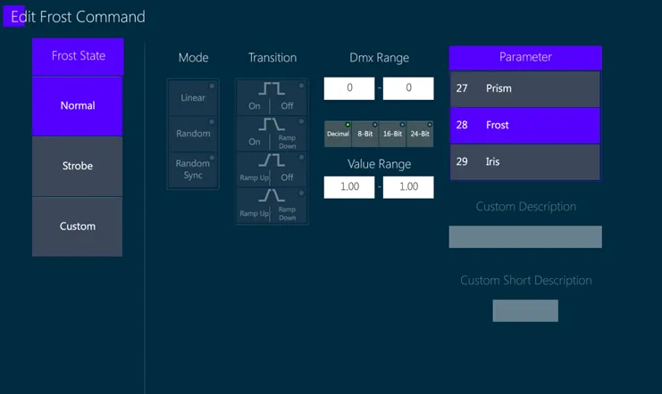
Frost State – it may be Normal, Strobe and Custom.
Normal – static. If the command is just open set value 1, if it is close set value 0. Giving a range of different numbers will let moving a slider to choose the exact value through the range.
Strobe – strobing. This will require to fill in Mode and Transition.
Custom – free text command, use the Custom Description + Custom Short Description to define the command.
DMX Range – the DMX range of the command. Two commands cannot overlap.
Parameter – choose the parameter using this picker, usually Frost but can be any parameter type.
Press Confirm to save the command.
Pressing Back (<–) will discard the changes made to this command.
14.5.4.4 Iris Picker
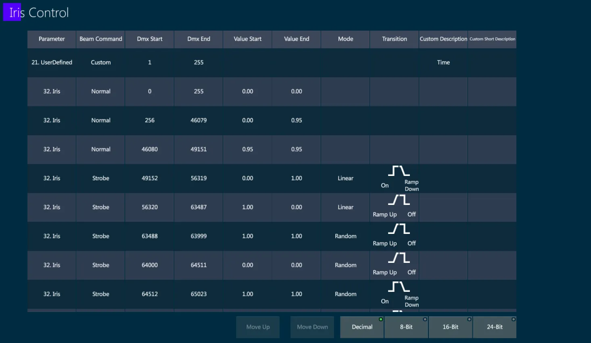
The Iris Picker control table shows rows with all the commands that will be affected by the Smart Screen Iris Picker, their DMX values and their properties.
{ADD} may be used to create a new command.
{EDIT} may be used to change the command.
{CLONE} may be used to duplicate the command.
{DELETE} may be used to remove the command.
{IMPORT} may be used to take the commands from a different device.
Press {EDIT} to open the Edit Iris Command popup.
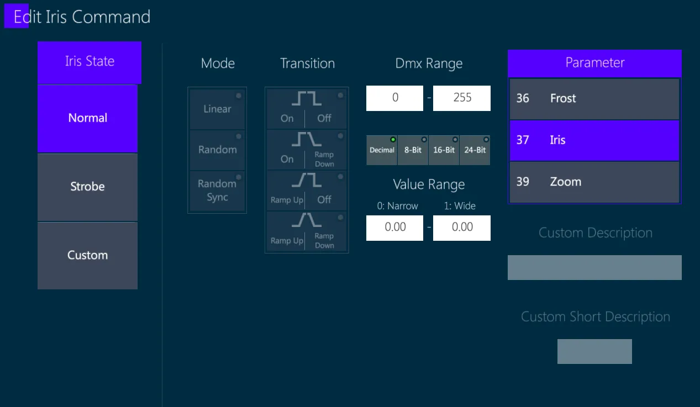
Iris State – it may be Normal, Strobe and Custom.
Normal – static. If the command is just open set value 1, if it is close set value 0. Giving a range of different numbers will let moving a slider to choose the exact value through the range.
Strobe – strobing. This will require to fill in Mode and Transition.
Custom – free text command, use the Custom Description + Custom Short Description to define the command.
DMX Range – the DMX range of the command. Two commands cannot overlap.
Parameter – choose the parameter using this picker, usually Iris but can be any parameter type.
Press Confirm to save the command.
Pressing Back (<–) will discard the changes made to this command.
14.5.4.5 Zoom Picker
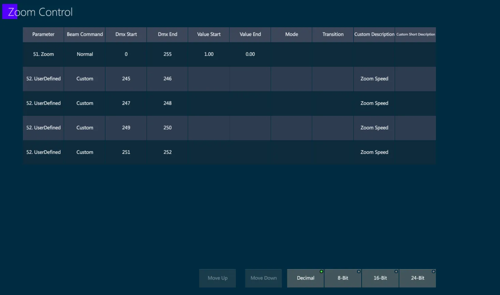
The Zoom Picker control table shows rows with all the commands that will be affected by the Smart Screen Zoom Picker, their DMX values and their properties.
{ADD} may be used to create a new command.
{EDIT} may be used to change the command.
{CLONE} may be used to duplicate the command.
{DELETE} may be used to remove the command.
{IMPORT} may be used to take the commands from a different device.
Press {EDIT} to open the Edit Zoom Command popup.
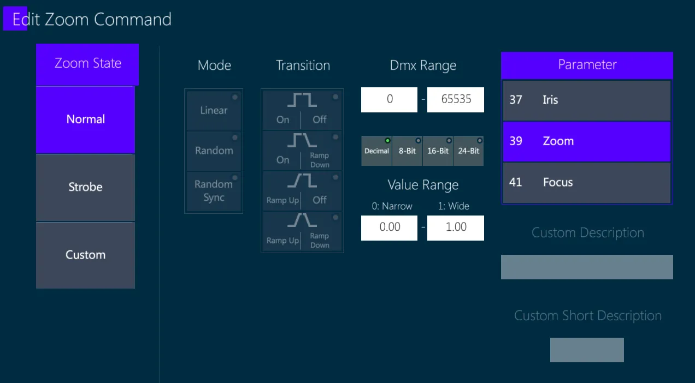
Zoom State – it may be Normal, Strobe and Custom.
Normal – static. If the command is just open set value 1, if it is close set value 0. Giving a range of different numbers will let moving a slider to choose the exact value through the range.
Strobe – strobing. This will require to fill in Mode and Transition.
Custom – free text command, use the Custom Description + Custom Short Description to define the command.
DMX Range – the DMX range of the command. Two commands cannot overlap.
Parameter – choose the parameter using this picker, usually Zoom but can be any parameter type.
Press Confirm to save the command.
Pressing Back (<–) will discard the changes made to this command.
14.5.4.6 Focus Picker
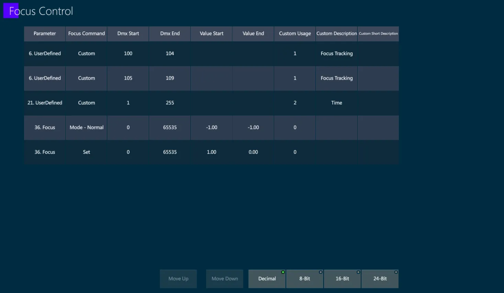
The Focus Picker control table shows rows with all the commands that will be affected by the Smart Screen Focus Picker, their DMX values and their properties.
{ADD} may be used to create a new command.
{EDIT} may be used to change the command.
{CLONE} may be used to duplicate the command.
{DELETE} may be used to remove the command.
{IMPORT} may be used to take the commands from a different device.
Press {EDIT} to open the Edit Focus Command popup.
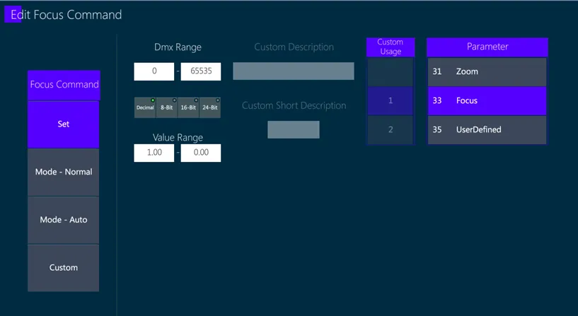
Focus Command - Set, Mode Normal, Mode Auto, Custom.
Set – the typical command with a value range. Must be inside a DMX Range of a Mode command, if it does not exist one will be automatically created.
Mode Normal – Focus will work normally according to the Set Command, use this mode if not stated otherwise in the DMX Chart.
Mode Auto – Auto Focus will decide the focus on its own using an internal algorithm of the fixture.
Custom – free text command, use the Custom Description + Custom Short Description to define the command.
DMX Range – the DMX range of the command. Two commands cannot overlap.
14.5.4.7 Wheel Picker
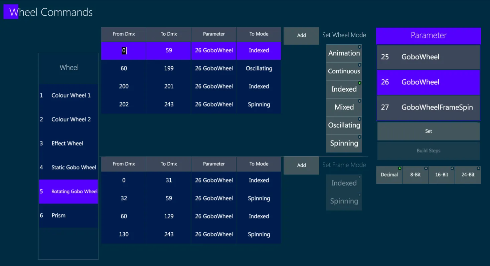
The Wheel Picker includes all the commands that will be affected by the Smart Screen Wheel Picker, which could control parameters of different Banks depending on the wheel type.
The most common Wheel Types are:
Color Wheels (usually in Color Bank)
Prism Wheels (usually in Beam Bank)
Static Gobo Wheels (usually in Image Bank)
Rotating Gobo Wheels (usually in Image Bank)
Effect Wheels (usually in Image Bank)
Animation Wheels (usually in Image Bank)
👉 Before working on the Wheel Picker the fixture’s wheels must have already been created in the Device Wheels popup, accessible from the device’s home page.
On the left side there is the list of the Created Wheels.
Choose the wheel to assign its commands.
The top list defines the Wheel Mode according to the range of the DMX range.
The available Wheel Modes are:
Indexed – The wheel has the same position for the entire command.
Continuous – The wheel moves between several positions, letting the user stop at any point between the 2 slots.
Mixed – The wheel is both Indexed and Continuous. It works the same as Continuous.
Oscillating – the wheel will be able to shake in place.
Spinning – Instead of a specified wheel slot, there are a direction and a speed in which the whole wheel spins, effectively switching between all of its slots.
Animation – special commands for animation wheels.
Once a mode is created, select it and press {EDIT} to choose the commands available when the mode is activated.
The commands will always be commands of that mode and will have their own structure, but they do not have to be of the same parameter. If they are of the same parameter, then the parameter must be in the DMX range of the mode.
If there are multiple ranges pointing to the same mode, they will have the same commands available.
👉 Some DMX Chart just give the commands one after another, in that case group them as it appears to be more sensed.
The bottom list defines the Frame Modes for frame commands.
The rules are the same as the wheel commands, but while wheel commands cannot overlap with one another, and Frame commands cant overlap with one another, Wheel commands can overlap with Frame commands.
Frame commands are used when the wheel slot rotates left/right.
Frame command has 2 modes:
Indexed – go to a specified degree of rotation.
The rules are the same as Indexed Wheel commands. The values are in degrees.
Spinning – the slot will continuously spin.
The rules are the same as Spinning Wheel commands.
Press {EDIT} to open the Edit Wheel Command popup.
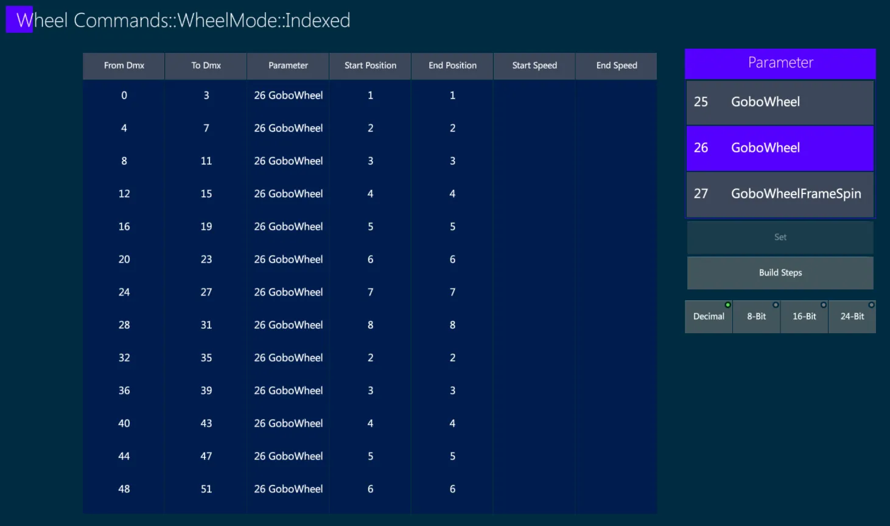
Each command will have a DMX range for that command, the parameter, and other columns that depend on the command type.
Start/End Position – the slot on the wheel, where the first slot is number 1.
Even if it starts with Open slot, the Open slot will be number 1 and then the first frame will be 2 and so on.
In Animation mode 0 will be animation off.
Start/End Speed – movement speed of the wheel.
In Oscillating, it will be the speed of the shake.
In Spinning, it will be the speed of the spin.
In Spinning mode, when the device should not spin, put Start and End Speed as -1.
Direction – the direction of the spin: Forward, Reverse or None.
If Direction is None, put -1 at Start/End Speed.
Start/End Orientation – The angle of the animation.
Depth Strobe Transition – The strobe of the animation.
Depth Strobe Start/End Rate – The speed of the strobe in animation wheel.
The Build Steps popup is available to create similar steps quickly in the modes: Indexed, Continuous, Mixed, Oscillating.
Press {Build Steps} to open the Build Steps popup.
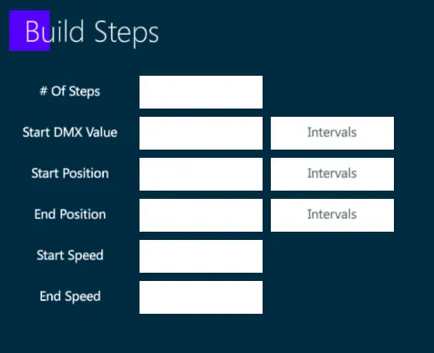
# Of Steps – number of steps to create.
Start DMX Value – the DMX value of the start of the range of the first step. Intervals will be the size of the DMX range.
Start/End Position – the start/end position of the first step to be created. Intervals is the difference between each 2 adjacent steps.
👉 Make sure that the position is on a slot that exists on the device, so that the commands will fit the number of slots in the wheel.
Start/End Speed – the start/end Speed of the steps.
14.5.4.8 Blade Picker
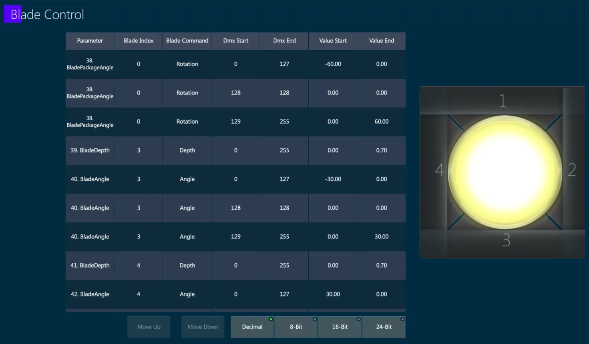
The Blade Picker control table shows rows with all the commands that will be affected by the Smart Screen Blade Picker, their DMX values and their properties.
The blades are indexed 1-4.
Pressing a command will show on the image what blade it is controlling.
{ADD} may be used to create a new command.
{EDIT} may be used to change the command.
{CLONE} may be used to duplicate the command.
{DELETE} may be used to remove the command.
{IMPORT} may be used to take the commands from a different device.
Press {EDIT} to open the Edit Blade Command popup.
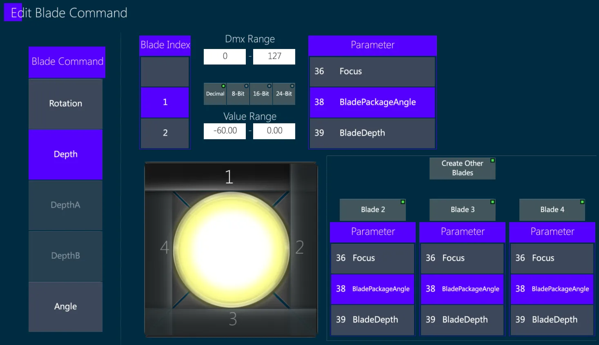
Each command will need to be assigned a Blade Index to choose which blade it controls.
Depth – The depth of the blade. 0 is full open, 50 is up to the middle of the light, 100 is all the way up to the opposing blade.
Angle – The angle of the blade in degrees. 0 is straight.
DepthA/DepthB – How far does the blade go from one side. 0 is open.
Rotation – rotate the entire blade system. As this affect all the blades, it will not get a specific Blade Index to control.
Create Other Blades – for faster workflow, this will create the blades assigning the same commands to the other Blade Indexes at the same time.
👉 After creating the other blades, pick the parameters for the other blades.
👉 As rotation does not have a blade index, this will not work on Rotation commands.
14.5.4.9 Control Picker
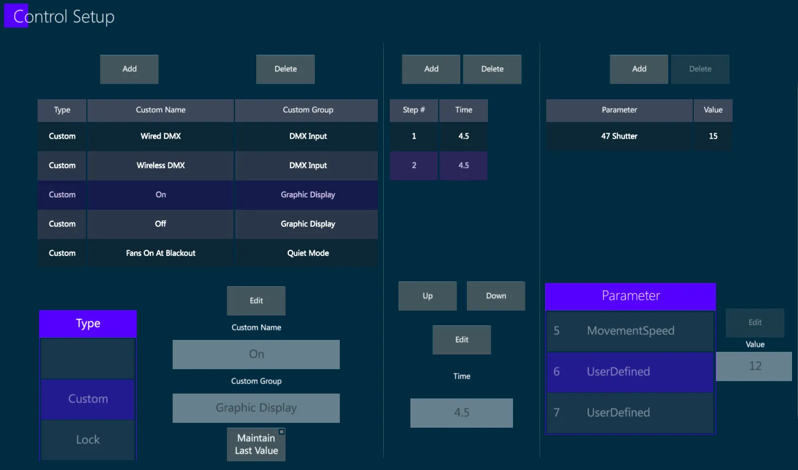
The Control Picker collects the commands for the keys shown in the Smart Screen Control Picker, with their DMX values and functions.
This is used to map fixture commands which are usually under the Control parameter or the Reset parameter.
Control commands are commands where you put the parameter at a certain DMX value for several seconds, then the fixture will activate that command, and then the parameter can go back to its default DMX.
The effects of the commands themselves will not be shown in the Vibe program, but there will be buttons to activate the commands.
The view works from left to right, as the commands are layered with data.
Commands List
The list on the left side is the command itself, and it has its own {Add}, {Delete} and {Edit} buttons.
The Edit button enables the Type picker to choose what kind of command it is.
If the exact command is not in the list, pick Custom and write the command name as free text (most of the commands are often set as custom).
Custom commands are usually grouped in Custom Groups, which will be the same for all the commands in the group, and have a Custom Name for the specific command.
The DMX Chart usually just reports the command, so split it into Group and Name is on user preference.
Maintain Last Value – the command will not return to the home DMX value once it is done. This is usually not the case, only activate this is the Device explicitly says so.
Steps - sequence of command triggers.
After adding a command, add steps with the list in the middle. Each step will have a time which tells in seconds for long the parameters in this step will be in this value.
The steps will go one after the other in sequential order, and when the final step is done the command is finished.
There must always be at least 1 step, and usually having 1 step is the most common option.
Parameters - the parameters controlled by each control command step.
Each step will need to be assigned which parameters are in the step and what DMX value they should hold.
This can be done with the right list, alongside the Parameter picker and Value edit box.
👉 To save time it is also possible to create one full command and then clone it, or to import a command from a different device.
{CLONE} may be used to duplicate the command.
{IMPORT} may be used to take the commands from a different device.
14.5.5 Media Picker
Media Picker will only be used for specific media server fixtures.
Each page in the Media Picker can be enabled/disabled.
Several features inside each page can also be enabled/disabled separately.
14.5.5.1 Media
Choose and set the file that the media server will use.
It is divided into folders, and each folder can contain more folders (level 1 and level 2 folders).
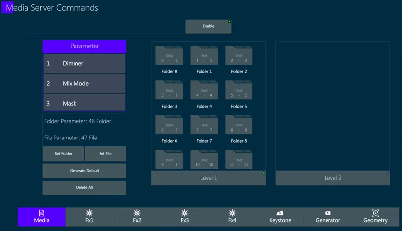
14.5.5.2 FX1-FX4
Choose and set the effects to use in the media server and the sliders to affect each effect.
In the Parameter Mapping tab, choose the parameters that affect each slider.
Select – The parameter that will select the effect itself, changing DMX for this parameter will give different effects.
Level – the level of the effect, will always be the first slider, usually always enabled.
Param 1-5 – The sliders for each effect. Not all effects have all 5 parameters enabled, and not all media server have 5 parameters.
In the Effect Data tab, fill on the left side all the different effects with the DMX that the Select Parameter has to be in order to activate the effect.
Once an effect is selected, on the right side may be selected:
how many parameters need to be activated for the effect
what is the name for each parameter
the value range of said parameter
The entire DMX range will always be used for the parameter.
Press Set Data whenever an effect is ready, before switching to the next effect, in order to save the parameter data for said effect.
14.5.5.3 Keystone
Will be shown in the media server as 4 movable dots with the space inside them marked, usually arranged as a square for default, and it looks the same in the Smart Screen.
This will be the shape of the output for the media server.
Pick the parameters and the range value for each X/Y for each corner, and the value range.
Value 0 is minimum and 1 is maximum.
14.5.5.5 Geometry
Choose and set the geometry functions that the media server can do.
In the Parameter Mapping tab, map the parameters to their functions.
In the Geometry Data tab, switch between different pages of the Geometry Data.
All the functions in the Geometry Data are self explained, and will have similar function in the Media Server in case it exist.
Use the DMX Chart to know exactly what parameter goes where and what DMX values to enter.
14.6 Fixture Support
For Fixture Device related requests as well as for adding a fixture brand or device to the library, please contact Compulite FIXTURE SUPPORT
👉 When asking for adding a new device or for editing an existing device, please take care of sharing any needed information, including:
Link to the web product page
Fixture Manufacturer and Model Name
Complete DMX Chart
Fixture Image
Filters and Gobos Images